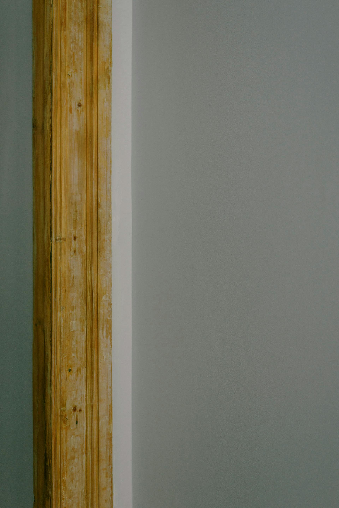

Homeowner Guide
Good intentions. Bad results.
Every year we get called in to fix DIY restorations that made things worse. Here is what we see — and why it matters.
You come home to a flooded basement. You grab every towel in the house, drag out the shop vac, and aim a box fan at the wet spots. Two days later, the floor looks dry. You think you handled it.
Three weeks later, the smell starts. Six weeks later, there is mould behind the baseboards. Three months later, your insurance company says the damage is no longer covered because it was not properly documented or remediated when it happened.
We are not saying this to scare you. We are saying it because we see it every single week. Restoration is not just cleanup — it is building science. And when it is done wrong, the problems come back worse and cost a lot more to fix the second time around.
What We See Every Week
8 DIY Mistakes That Make Things Worse
"I dried it with fans"
The surface looks dry, so it must be fine, right? Wrong. Moisture gets trapped inside wall cavities, under subfloors, and behind baseboards. A box fan dries the surface while everything underneath stays wet. Within two to three weeks, mould colonies are growing where you cannot see them. By the time you smell it, the damage has spread through the entire wall assembly.
Pros use thermal imaging and moisture meters to find what your eyes cannot.
"I bleached the mould"
Bleach is the number one thing people reach for. It kills surface mould and the stain fades, so it looks like it worked. But mould has roots — hyphae — that grow deep into porous materials like drywall, wood, and grout. Bleach cannot reach them. The water in the bleach actually feeds the roots, and within weeks the mould grows back thicker than before. Meanwhile, the spores have already spread through your air.
Proper remediation removes the mould at the source — not just the stain.
"I pulled out the wet drywall myself"
Seems logical — rip out the damaged stuff, let it dry, patch it up. The problem? If your home was built or renovated before the 1990s, there is a real chance those walls contain asbestos in the drywall compound, insulation, or texture coat. Cutting and tearing without testing can release microscopic fibres into the air that your whole family breathes. There is no safe level of asbestos exposure.
We test before we touch. Always.
"I kept the carpet — it dried out"
The carpet feels dry on top, so people assume it is fine. But the padding underneath is basically a sponge — it holds contaminated water, bacteria, and sewage residue long after the surface dries. Walk across it and you are pressing that moisture back up. Within days, the bacteria count underneath a wet carpet pad can reach levels that would shut down a restaurant. You cannot see it, but your body knows something is wrong.
Carpet padding almost always needs to go. The carpet itself sometimes can be saved — but only with the right equipment.
"I waited to call insurance"
A lot of people try to clean up first and call their insurance company later — sometimes days or weeks after the event. By then, the damage has changed. Secondary damage has set in. And the insurer's first question is going to be: why did you wait? Delay is one of the most common reasons claims get reduced or denied. Insurers expect you to mitigate immediately and document everything from hour one.
We document everything to insurance standards from the moment we arrive.
"I used a space heater to dry things out"
Heat feels like it should help, and it does evaporate surface water. But without proper dehumidification running at the same time, you are just turning your house into a sauna. The moisture goes into the air and then recondenses on cooler surfaces — walls, windows, inside closets. You are spreading the problem to rooms that were not even affected. Mould loves warm, humid air. A space heater without a dehumidifier is basically a mould accelerator.
Professional drying is a controlled system — air movers, dehumidifiers, and daily monitoring, working together.
"I cleaned up the soot myself"
After a fire, the instinct is to start wiping things down. But soot is not like regular dirt. It is acidic and oily. Wiping it with a regular cloth or household cleaner drives it deeper into the surface — into the pores of drywall, wood grain, fabric fibres. Once it is pushed in, the odour becomes permanent and the staining becomes almost impossible to reverse. What started as a surface issue becomes a tear-out job.
Soot removal requires specific techniques and chemistry. The wrong approach makes it permanent.
"It was just a small leak — I patched it"
A slow drip behind a wall does not look like an emergency, so people patch the pipe and move on. But by the time you notice a small leak, the water has usually been running for a while. The framing, insulation, and subfloor behind that patch have been soaking. Rot sets in silently. Mould grows in the dark. Months later you notice a soft spot in the floor, a musty smell, or a wall that is starting to bow. The small leak was never small — you just caught it late.
Even small leaks deserve a moisture inspection. What you cannot see is usually the real problem.
The Real Cost
DIY often costs 2-3x more in the end
The repair behind the repair
When hidden damage is missed, it grows. A $5,000 restoration becomes a $15,000 rebuild because the problems that could have been caught early are now structural.
Insurance does not cover "made it worse"
If improper cleanup leads to secondary damage — mould, rot, contamination — your insurer can and will reduce or deny the claim. Proper documentation from a certified firm protects your coverage.
Your family's health
Mould spores, asbestos fibres, bacteria from contaminated water — these are not nuisances. They are health hazards. The cost of getting it wrong is not just money. It is respiratory problems, allergic reactions, and long-term exposure risks for the people you care about most.
Straight talk
We are not here to make you feel bad about trying to handle it yourself. Most people do — it is a natural reaction. You want to fix it, protect your home, and get back to normal as fast as possible.
But here is the thing: what looks dry is not always dry. What looks clean is not always safe. And what you cannot see — behind walls, under floors, inside ducts — is almost always where the real damage is.
The best time to call a professional is before you start. The second best time is right now.
The Difference
What professional restoration actually looks like
Assess and document everything
Thermal imaging cameras, pin and pinless moisture meters, air quality testing. We find every pocket of moisture, every affected material, every hidden problem — and we document it all so your insurance claim is bulletproof from day one.
Controlled remediation
Containment barriers, HEPA air filtration, commercial-grade drying systems, antimicrobial treatments. Every step follows IICRC standards. Nothing is left to guesswork, and nothing is done out of sequence.
Verify and sign off
Third-party air quality testing, final moisture readings, insurance-ready documentation. We do not call it done until the numbers say it is done — not when it looks done, not when it smells done. When the science says it is safe.
No Pressure, Just Answers
Not sure if you need a pro?
Call us. We will tell you straight. If you can handle it yourself, we will say so. If you need help, we will explain exactly what is going on and what it takes to fix it right. No sales pitch.
Okanagan: 250-862-8815 | Vernon: 250-542-6211 | Kootenays: 250-442-7977
Dealing with damage right now?
1-877-91-FLOOD (913-5663)Okanagan: 250-862-8815 | Vernon: 250-542-6211 | Kootenays: 250-442-7977